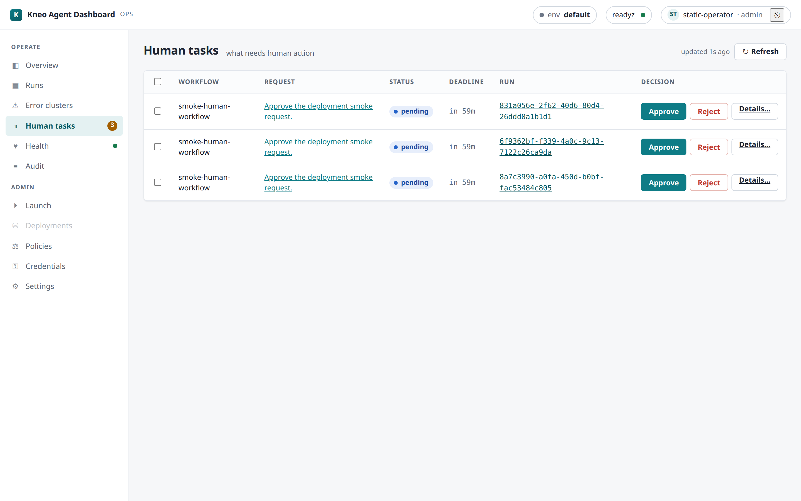

Tutorial — zero to operating, timed (0.8.0)¶
A timed, end-to-end walkthrough: deploy the dashboard → connect it to your platform → launch an agent → watch it live → resume its human step → find it in the audit trail. Every stage has a time budget; the whole path is designed to fit under 60 minutes on the supported production recipe (well under 30 on the eval stack). If a stage blows its budget, that is a finding — record it (this tutorial doubles as the beta charter's non-author validation script).
Prerequisites: Docker + compose; a kneo-serv (≥ 1.2.0) you can reach (or use the eval stack, which brings its own); for the production path: a TLS cert, an OIDC client registration, and 15 spare minutes at your IdP's console. The quickstart's "first five minutes" is the untimed short form of stages 2–3.
Your timing record¶
| Stage | Budget | Your time | Findings |
|---|---|---|---|
| 1 · Deploy | 20 min | ||
| 2 · Connect + first look | 10 min | ||
| 3 · Launch | 10 min | ||
| 4 · Live trace | 5 min | ||
| 5 · Human-in-the-loop | 5 min | ||
| 6 · Audit + wrap | 10 min | ||
| Total | 60 min |
Stage 1 · Deploy (budget: 20 min)¶
The supported shape is the production recipe — OIDC + SQLite + TLS proxy (deployment guide has the full detail):
git clone https://github.com/kneo-agent/kneo-dash && cd kneo-dash/examples
cp .env.example .env # fill in: KNEO_URL/KEY · session secret · OIDC block
mkdir tls && cp /path/fullchain.pem /path/privkey.pem tls/
docker compose -f docker-compose.prod.yml --env-file .env up -d
Checkpoint (stage passes when): https://<host>/api/readyz returns 200 and the
login page renders. (Evaluating only? docker compose up on
examples/docker-compose.yml reaches the same checkpoint in ~3 min, static auth —
budget the stage at 5 min and skip the OIDC/TLS rows.)
Common budget-eaters: an OIDC redirect-URL mismatch (must be exactly
https://<host>/api/callback) and a proxy that rewrites Host
(hardening guide — the same-origin guard needs it intact).
Stage 2 · Connect + first look (budget: 10 min)¶
- Sign in (your IdP → the role you mapped in
KNEO_DASH_OIDC_ROLE_MAP; use an admin identity for this tutorial). - Settings › Connections → Add connection: name your environment (e.g.
prod), point it at akneo_clientprofile. The top-bar env switcher now offers it — and (0.8.0) offers each operator only the environments their role may use. - Tour the operator's five questions: Overview (what's running / is it healthy), Runs, Human tasks, Health, Audit.

Checkpoint: the switcher shows your env; Health renders real platform probes (not an error card).
Stage 3 · Launch (budget: 10 min)¶
Launch (admin group) walks Load → Deploy → Run (policies & credentials explains the gating):
- Paste a Studio-produced spec (or the no-LLM smoke spec from examples) into the inline editor.
- ① Load — a static preview: what this agent is.
- ② Deploy — compile + policy verification against your env → READY.
- Enter the run input, type the environment name into the confirm gate, ③ Run.
Checkpoint: the SPA lands on the new run's detail page with a run id.
Stage 4 · Live trace (budget: 5 min)¶
On the run detail: Trace tab → Live tail. Watch events stream
(workflow_started → …). This is the SSE path the platform emits and the dashboard
tails — the live-debugging loop (runs & debugging).

Checkpoint: "streaming…" with at least one event frame on screen.
Stage 5 · Human-in-the-loop (budget: 5 min)¶
If your spec has a human step (the smoke spec does), the run pauses and the task appears in Human tasks (the nav badge counts pending work):

Open the task → choose a decision → Resume. The run continues (or completes).
Checkpoint: the queue row clears and the run's status moves past blocked.
Details: human-in-the-loop guide.
Stage 6 · Audit + wrap (budget: 10 min)¶
- Audit — find your launch and your resume, attributed to your identity (this is the per-operator trail the platform's shared service account can't give you):

- Health — confirm all subsystems green after your traffic.
- (Production) Confirm your Prometheus is scraping
/metrics(observability) and skim the post-deploy checklist for what to watch in week one.
Checkpoint: both of your actions visible in Audit with your identity + outcome.
Recording your run¶
Fill the timing table above. Non-author validators (the beta-charter checkbox):
file the completed table plus any stage that failed its checkpoint or budget as a
GitHub issue labeled beta-feedback — task failures get dispositioned in the release
tracker, not silently absorbed.